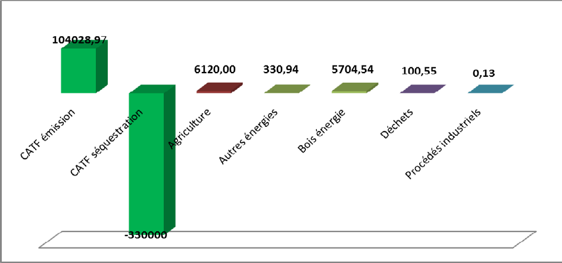
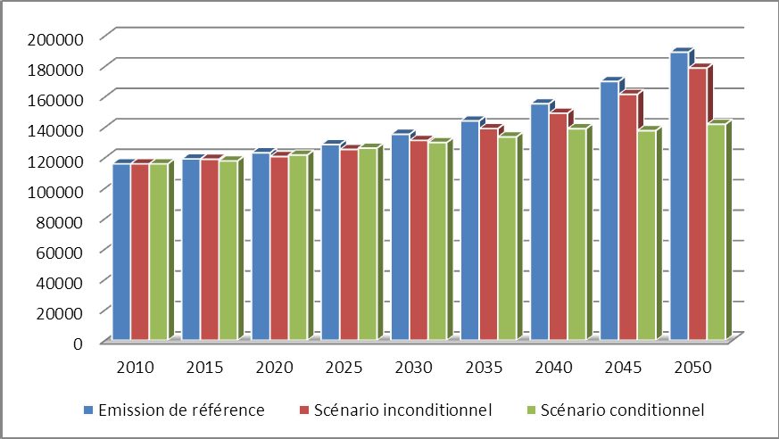

Unité - Dignité - Travail
Septembre 2015
|
Vision nationale |
Devenir un pays émergent d’ici 2030, bâti sur une économie diversifiée, durable et harmonieusement répartie sur le territoire national, un État moderne ouvert sur le monde, attaché à une éthique et à l’innovation technologique. |
|
Méthodologie |
Revue bibliographique Consultation des parties prenantes Outil d’IGES : Méthode de Niveau Tier 1 (Manuel d’inventaire des GES 1996, version révisée et 2006) Année de référence : 2010 Données de référence :Seconde Communication Nationale en 2013 Hypothèses : Taux de croissance économique (5-10%) et démographique (2,5%) |
|
Champs d’application et couverture des contributions |
Périmètre géographique : Territoire national Secteurs concernés : Changement d’affectation des terres et foresterie (89,46%) ; Energie (5,19%) ; Agriculture (5,26%) ; Déchets (0,09%) et Procédés industriels et utilisation des solvants (données de 2010). Gaz couverts : Dioxyde de carbone (CO2), méthane (CH4) et hémioxyde d’azote (N2O) représentant plus de 75% des émissions anthropiques nationales. |
|
Emission pour l’année de référence |
|
|
Type de Contribution |
Contributions axées sur un développement durable et sobre en carbone selon une approche combinée des activités conditionnelles et inconditionnelles « Action-Résultats ». |
|
Niveau de Contribution |
Réduire de 5% les émissions du pays par rapport au niveau de référence BAU (soit 5 498,3 kt éq-CO2 d’évités) à l’horizon 2030 et de 25% (soit 33 076,1 kt éq-CO2) à l’horizon 2050, dans le cadre d’une mise en œuvre conditionnelle |
|
Adaptation |
Finalités : Agriculture1 et Sécurité alimentaire, santé, infrastructures de base et gestion durable des ressources naturelles visant le maintien du taux de croissance moyenne annuel des activités agricoles de 6% et une stabilisation du taux de l’insécurité alimentaire à 15%. Profil de vulnérabilité : Aléas extrêmes (pluies diluviennes, inondations et sècheresse), zones plus vulnérables (Sud, Nord et Nord-Est) et populations les plus vulnérables (femmes, enfants, peuples autochtones et personnes âgées, soit environ 75%) Secteurs d’activités prioritaires : Agriculture et sécurité alimentaire, foresterie, énergie, santé publique, ressources en eau et aménagement du territoire. Options d’adaptation : Ajustement du cadre politique, amélioration dela connaissance de la résilience aux changements climatiques, gestion durable des systèmes agro-sylvo-pastoraux, aménagement du territoire, amélioration et développement des infrastructures de base, garantie de la sécurité énergétique, amélioration des systèmes de santé publique, amélioration de la gestion des déchets et gestion durable des ressources en eau |
|
Besoins en financement sur la période d’engagement. |
Atténuation : 2,248 milliards $ US sur la période d’engagement dont 2,022 milliards $ US de conditionnel. Une contribution de 10% représentant la contrepartie nationale des projets est prévue. Adaptation : 1,554 milliards $ US sur la période d’engagement dont 1,441 milliards $ US de conditionnel. Une contribution de 10% représentant la contrepartie nationale des projets est prévue. |
|
Caractère ambitieux et équitable |
|
|
Procédé de mise en œuvre |
|
La République Centrafricaine est un pays enclavé de l’Afrique qui s’étend sur une superficie d’environ 623 000 km2. Le relief est constitué d’une vaste pénéplaine dominée par deux massifs montagneux à ses extrémités Est et Ouest et reliée par une dorsale centrale qui sépare les deux principaux réseaux hydrographiques à savoir, le bassin du Chari-Logone au nord et le bassin du Congo au sud.
Le climat est équatorial chaud et humide caractérisé par deux saisons : une saison sèche et une saison pluvieuse. La pluviométrie varie entre 800 mm au Nord et 1600 mm au Sud et la température moyenne annuelle oscille entre 15 °C au Sud et 38 °C au Nord. Les scénarios d’avenir indiquent une augmentation de température de l'ordre de 1,4 à 2,2°C, dans l’hypothèse de faible émission de gaz à effet de serre, et de 1,8 à 2,7°C, dans l’hypothèse de forte émission de gaz à effet de serre. Les prévisions concernant l’évolution des précipitations sont moins nettes, certaines prévoient une légère augmentation des précipitations annuelles alors que d’autres projettent des variations irrégulières des précipitations. Les aléas climatiques extrêmes, dont la probabilité de retour pourrait augmenter avec le changement climatique, sont les pluies diluviennes suivies d’inondations et les sécheresses.
Du Sud au Nord, la diversité biologique s’organise en cinq (5) grandes zones phytogéographiques dotées chacune d’une faune spécifique : la zone guinéenne forestière de la forêt dense humide ; la zone soudano-oubanguienne abritant les forêts denses semi-humides, claires et sèches ; les zones soudano-guinéenne et soudano-sahélienne composées de divers types de savanes et la zone sahélienne constituée de steppes.
La population centrafricaine est estimée à 5 millions d’habitants avec une croissance démographique de l’ordre de 2,5%/an. Elle est majoritairement rurale (62,1%), féminine (50,2%) et jeune (49,4 % sont âgés de moins de 18 ans). Le pays est faiblement peuplé et inégalement occupé. La densité moyenne territoriale est de 7,2 habitants au Km2. Les décennies de crises militaro-politiques ont anéanti les prémices de développement et le dernier conflit de 2012-2013 a généralisé l’insécurité, détruit le tissu productif et démantelé l’appareil administratif.
La RCA fait partie des pays les plus pauvres de la planète avec un indice de développement humain estimé à 0,341 en 2013. La pauvreté touche plus de la moitié de la population avec pour corollaires l’insécurité alimentaire et un déficit de services sociaux de base. L’économie centrafricaine repose encore sur le secteur agricole primaire à faibles plus-values, à intensité de main-d’œuvre peu qualifiée et essentiellement rurale. Aux diverses contraintes endogènes au développement du pays dont le faible niveau d’industrialisation et l'enclavement du territoire, s’ajoutent les changements climatiques en cours qui se traduisent par ses différents impacts : (1) changements lents et graduels du milieu environnemental, en variation des saisons climatiques et parfois en évènement climatiques extrêmes (inondation, sècheresse, tempêtes tropicales,..) pouvant résulter en catastrophe naturelle.
Les émissions annuelles de la République Centrafricaine estimées à 116 285,49 ktéq-CO2 en 2010, soit 26 tonnes éq-CO2/personne représentent moins de 0.002% des émissions mondiales. Malgré son faible taux d'émission de GES, la République Centrafricaine réaffirme son adhésion au principe de responsabilité collective mais différenciée et prend conformément à la Décision 1CP/19 les présentes mesures ambitieuses pour répondre à cet enjeu sans entraver son développement économique et social et environnemental.
Cependant, la vulnérabilité aux changements climatiques et une faible capacité d'adaptation à leurs effets néfastes représentent des menaces graves pour la gestion des écosystèmes et autres ressources agricoles et naturelles renouvelables, la cohésion sociale, la stabilité et le développement durable. Aussi, la RCA est-elle obligée de prendre en compte l’adaptation de son territoire, de ses communautés et de ses activités socioéconomiques dans cet effort de contribution à l’atténuation des changements climatiques. L’intégration d’un volet adaptation à la CPDN est donc un choix stratégique et vital pour le pays. En outre, non seulement la plupart des mesures d’adaptation, en particulier celles qui concourent à la maîtrise des changements d’affectation des terres et à la réduction de la gratuité foncière en agriculture, contribuent également à l’atténuation, mais aussi, le volet adaptation qui concerne les populations les plus exposées, les plus pauvres et les plus vulnérables, est l’occasion de promouvoir, sur toute l’étendue du territoire, un développement socio- économique à la base plus équitable et durable pouvant relever les défis de désenclavement et de prévention des conflits interrégionaux.
La vision de la RCA est de «Devenir un pays émergent, bâti sur une économie diversifiée, durable et harmonieusement répartie sur le territoire national, un État moderne ouvert sur le monde, attaché à une éthique et à l’innovation technologique». Les objectifs généraux de la CPDN de la République Centrafricaine sont axés sur un développement durable et sobre en carbone et une résilience accrue des secteurs agricoles et de sécurité alimentaire, de la santé, de la gestion des ressources naturelles et des infrastructures aux effets néfastes des changements climatiques.
Le processus de l’élaboration de la CPDN est basé sur une revue bibliographique, la consultation des parties prenantes et les directives d’évaluation des émissions de gaz à effet de serre du Groupe Intergouvernemental sur l’Evolution du Climat (GIEC). Au plan institutionnel, un Groupe Technique d’Experts Nationaux Multisectoriels chargé de l’élaboration des CPDN a été mis en place.
La République Centrafricaine ambitionne de réduire ses émissions d’au moins 5% et 25% respectivement aux horizons 2030 et 2050 par rapport à ses émissions de référence BAU et d’augmenter son potentiel de séquestration. En bénéficiant de l’appui international, elle émettra en 2050 environ 33 076,1 kt éq-CO2 de moins par rapport aux émissions de référence annuelle.
La RCA ambitionne également de réduire les émissions des polluants climatiques de courte durée de vie, en anglais Short-Lived Climate Polluants (SLCP), dont la science a mis en évidence leur important potentiel de réchauffement du climat à court terme et leurs effets nocifs sur la santé, l'agriculture et les écosystèmes.

Figure 1 : Bilan de l’inventaire des gaz à effet de serre de 2010 (Ministère de l’Environnement, de l’Ecologie et du Développement Durable, 2013)
Les données de référence relèvent du bilan de l’inventaire des gaz à effet de serre de 2010 publié dans la Seconde Communication de la RCA. Les émissions de gaz à effet de serre s’élèvent à 116 285,49 kt éq-CO2 pour une contribution sectorielle de 89,46% pour les changements d’affectation des terres et foresterie ; 5,26% pour l’agriculture ; 5,19% pour l'énergie dont 4,91% pour le bois énergie ; 0,09% pour les déchets et une part marginale pour les procédés industriels et utilisation des solvants. Par ailleurs, le potentiel de séquestration est évalué à 330 000 kt éq-CO2 soit 62% par les terres abandonnées après exploitation et 38% par la biomasse.
Les hypothèses du scénario de référence reposent sur :
En 2050, la RCA émettra environ 189 271,8 ± 94 635,4 kt éq-CO2 soit 62,7% de plus qu’en 2010 et pour une contribution sectorielle de 68,4% pour les changements d’affectation des terres et foresterie ; 13,4% pour l’énergie dont 10,7% pour le bois énergie ; 13,4% pour l’agriculture ; 3,2% pour les déchets et enfin 1,6% pour les procédés industriels et l’utilisation des solvants.
Figure 2 : Evolution des émissions de gaz à effet de serre de la RCA (kt éqCO2)
En tenant compte du taux de déforestation nette qui est de 0,155% (EDF 2013), le potentiel de séquestration du pays sera de 310 146,43 ± 155 073,22 2kt éq-CO2 en 2050 alors qu’il était de 330 000 kt éq-CO2 en 2010, soit une régression de 6,02%.
Toutefois, il faut noter que les prévisions climatiques de la RCA qui annoncent une augmentation de la pluviométrie et de l’insolation, sont favorables à l’apparition de recrus forestiers sur toute l’étendue du territoire. Ce phénomène augmentera la capacité de séquestration du massif forestier.
Les contributions nationales sont constituées de :
Tableau 1 : Mesures d’atténuation conditionnelles
|
Description du Projet |
Emissions évitées(KtCO2/anévités) |
|
|
Secteurs impactés |
Quantités évitées |
|
|
Programme national de transformation poussée du bois |
CATF/Energie |
500 |
|
Programme national de Reboisement et réhabilitation des zones post exploitation |
Energie/Agriculture/CATF |
1000 |
|
Construction d’une centrale solaire photovoltaïque à Bangui |
Energie/PI-US |
250 |
|
Aménagement hydroélectrique de Dimoli 180 MW (Projet intégrateur) |
Energie/PI-US |
≥ 1500 /pays |
|
Aménagement hydroélectrique de la Lobaye 72 MW |
Energie/PI-US |
≥ 1500 /pays |
|
Aménagement hydroélectrique de La Kotto 60 MW |
Energie/PI-US |
1000 |
|
Aménagement hydroélectrique de Mobaye (Projet intégrateur) |
Energie/PI-US |
250 |
|
Programme national d’Electrification Rurale |
Energie |
250 |
|
Construction d’un barrage à écluse au fil de l’Oubangui à Zinga |
Energie/CATF |
2500 |
|
Programme Foyers améliorés |
Energie/CATF/Déchets |
500 |
|
Programme National Biocarburants |
Energie/CATF/Agriculture/Déchets |
250 |
|
Programme de réduction des polluants climatiques de courte durée de vie |
Energie/Déchet/Transport/Agriculture/Santé/PI-US |
250 |
|
Promotion des lampes à économies d’énergie |
Energie/PI-US |
10 |
La mise en œuvre des mesures d’atténuation inconditionnelles permettra de réduire les émissions de gaz à effet de serre de 4 062 kt éq-CO2 et 10 410 kt éq-CO2 respectivement en 2030 et 2050. Avec l’appui de la communauté internationale, la RCA réduira de 5 500 kt éq-CO2 et 47 320 kt éq-CO2 respectivement en 2030 et 2050.

Figure 3 : Trajectoires escomptés des émissions de gaz à effet de serre
La RCA est à la fois en situation de post-conflit et en transition politique qui lui confèrent un niveau considérable de vulnérabilité socioéconomique. En outre, tout le territoire national est exposé aux aléas climatiques extrêmes que sont la sècheresse et les pluies diluviennes suivies d’inondations. Les pluies diluviennes et les inondations affectent principalement la partie sud du pays, tandis que la sècheresse est plus présente dans le nord et le nord-est. Les populations rurales qui sont les plus pauvres sont les plus exposées. Les changements climatiques touchent donc 75 % de la population centrafricaine.
Au regard de ce qui précède, la CPDN en renforçant la résilience aux changements climatiques dans les secteurs clés, élément essentiel de développement durable est susceptible de contribuer à la cohésion nationale, la stabilisation du pays, la restauration de l’autorité et de l’action de l’Etat. De plus, elle facilitera une approche programmatique pour accroître la capacité d’adaptation des communautés, des écosystèmes et des secteurs d’activités agricoles, élevage, forêt, santé et autres secteurs vulnérables aux effets néfastes des changements climatiques.
Huit (8) options d’adaptation ont été identifiées à partir de vint et sept (27) objectifs issus des priorités nationales. Cinq initiatives en cours bénéficiant du soutien des partenaires au développement et quinze (15) mesures d’adaptation en perspective sont présentées ci-dessous comme préalables à l’élaboration du Plan National d’Adaptation, qui déclinera un ensemble de mesures à prendre aux différents niveaux de décision (région, préfecture, etc.).
Objectif 1. Intégrer les mesures d'adaptation aux changements climatiques dans les politiques et programmes de développement pour les secteurs prioritaires les plus vulnérables3;
Objectif 2. Améliorer la sensibilisation, l’éducation et la communication sur l’adaptation et les risques liés aux changements climatiques
Objectif 3. Renforcer les capacités de gestion des données climatiques à des échelles nationales, régionales et locales ;
Objectif 4. Etudier les mécanismes de résilience des systèmes agro-sylvo-pastoraux,
Objectif 5. Mettre en place un système d’alerte précoce.
Objectif 6. Introduire les variétés adaptées aux extrêmes climatiques ;
Objectif 7. Diversifier les systèmes agricoles, en associant plusieurs types de cultures et en diversifiant les variétés ;
Objectif 8. Diversifier les moyens d'existence et les systèmes de production (pêche, aquaculture, agriculture, élevage, chasse et forêt) ;
Objectif 9. Mettre en place une banque de semences (animale et végétale) ;
Objectif 10. Promouvoir les systèmes agro forestiers de gestion durable des sols ;
Objectif 11. Promouvoir la foresterie urbaine, périurbaine et communautaire ;
Objectif 12. Restaurer les paysages forestiers dégradés ;
Objectif 13. Gérer durablement les couloirs de transhumance et les conflits entre agriculteurs et éleveurs.
Objectif 14. Etablir les plans d'affectation des terres en fonction des vocations (infrastructures routières, mines/pétrole, agriculture, élevage, forêts, aires protégées ou réserves de faunes espaces urbains, etc.)
Objectif 15. Améliorer les normes de construction des infrastructures;
Objectif 16. Développer des ouvrages adaptés aux changements climatiques.
Objectif 17. Diversifier les sources d’énergie ;
Objectif 18. Développer les installations hydroélectriques (y compris micro-barrages) ;
Objectif 19. Promouvoir l'utilisation des déchets de bois issus des compagnies forestières comme combustible ;
Objectif 20. Promouvoir l'utilisation des foyers améliorés.
Objectif 21. Développer un système de surveillance et de prévention et de réponse efficace aux maladies humaines liées aux changements climatiques.
Objectif 22. Mettre en place un plan de gestion des déchets ;
Objectif 23. Développer des unités de gestion des déchets ;
Objectif 24. Valoriser les déchets.
Objectif 25. Améliorer l’approvisionnement en eau potable ;
Objectif 26. Mettre en place un système de contrôle de qualité de l'eau ;
Objectif 27. Développer un système de suivi des ressources en eau souterraine et de surface
Notons que toutes les mesures relevant des secteurs de l’Agriculture et de la Foresterie sont susceptibles de générer des co-bénéfices en atténuation. A titre d’exemple, le Programme National d’Investissement Agricole, de sécurité Alimentaire et Nutrition (PNIASAN) vise l’atteinte et le maintien d’une croissance annuelle du PIB agricole de 6%, et d’un taux d’insécurité alimentaire de 15%. Il table sur la mobilisation de 70% de la population pour valoriser 661 826 ha de terres dès le démarrage avec une extension prévue de 28,6% pour atteindre 851 750 ha en cinq ans. L’intégration des approches agro- écologiques sensibles au climat (smart agriculture) au PNIASAN dans l’optique d’accroitre la productivité et le rendement peut permettre de retenir chaque paysan sur la même parcelle de terre initiale pendant 5 ans ce qui permettra, soit de minimiser, soit d’éluder carrément l’accroissement des superficies et de capitaliser ainsi (28%) de défrichement évité des 4 années suivant la mise en œuvre du projet. Pour ce faire, une révision du PNIASAN et un relèvement conséquent de son budget par un apport des fonds conditionnels attendus, notamment du fonds verts climat es nécessaire.
La République Centrafricaine envisage une approche holistique intégrant l’ajustement des politiques et stratégies nationales, l’amélioration des cadres législatifs et règlementaires, le développement des capacités et des transferts de technologies dans certains domaines prioritaires.
Les secteurs et technologies ciblées sont récapitulés dans le tableau suivant :
Tableau 3 : Domaines et technologies ciblées
|
Secteurs |
Technologies ciblées |
|
Energie |
− Micro barrage hydroélectrique − Energie solaire calorifique et photovoltaïque − Procédés de méthanisation des matières organiques − Carbonisation améliorée |
|
Procédés Industriels et Utilisation des solvants |
− Capteurs à particules et à gaz |
|
Agriculture et élevage |
− Analyse pédologique − Production, contrôle et certification des semences de qualité − Lutte intégrée contre les phytopathologies − Surveillance, prévention et contrôle des maladies des animaux, de nature transfrontalière ayant un impact sur la santé humaine et les écosystèmes − Agro-écologie |
|
Changement d’Affectation des Terres et Foresterie |
- Transformation poussée du bois - Système de surveillance des terres et de la foresterie |
|
Déchets |
− Recyclage des déchets − Traitement des effluents industriels − Valorisation des déchets |
|
Observatoire systématique |
− Système d’observation climatologique et météorologique − Recherches |
Le transfert des technologies inclura un programme de renforcement des capacités à différents niveaux d’appropriation tant institutionnel que local.
Les besoins en financement s’élèvent à 3,802 milliards $ US sur la période d’engagement soit 2,248 milliards $ US pour la mise en œuvres des mesures d’atténuation et 1,554 milliards $ US pour le développement de résilience aux changements climatiques.
La sous-estimation des coûts des investissements nécessaires à l’adaptation est susceptible d’entretenir le gap de développement induit par les aléas climatiques. L’approche faite à partir du modèle FUND et qui sera consolidée par les travaux préparatoires au Plan National d’Adaptation, estime les besoins du pays en matière d’adaptation aux changements climatiques à environ 34 500 000 $ US en moyenne par an jusqu’en 2030 et 57 500 000 $ US en moyenne par an jusqu’en 2050.
En outre, la RCA pays Non-Annexe 1 soutient l’inclusion des instruments de marché internationaux, tels que le Mécanisme pour un Développement Propre, dans un accord post 2020 sur le climat. Un tel instrument peut être utilisé pour aider à financer certains investissements dans les infrastructures sobres en carbone et résilients au changement climatique.
La RCA considère que certaines options de développement sobres en carbone ou des actions supplémentaires pourraient être entièrement ou partiellement financées par le transfert international d’actifs carbone en tenant compte des considérations d’intégrité de l’environnement et de transparence.
Il est important de prévoir des moyens pour les études préalables des activités d’atténuation, d’adaptation et de transfert de technologie.
Tableau : Moyens financiers de mise en œuvre
|
A. ADAPTATION |
|||
|
Secteurs |
Inconditionn el US $ |
Conditionnel US $ |
Etudes pour les mesures conditionnelles US $ |
|
Mesures d'adaptation en cours d'exécution |
|||
|
Projet de résilience et de sécurité alimentaire dans la ville de Bangui et ses environs Ombella-Mpoko |
|||
|
PREVES |
|||
|
Projet de Développement de la Région Sud-Ouest (PDRSO) |
|||
|
Renforcement des systèmes agroécologiques du bassin du lac Tchad (PRESIBALT/PRODEBALT) |
|||
|
Gestion durable de la faune et du secteur de la viande de brousse en Afrique centrale GCP/RAF/455/GFF. |
|||
|
Mesures d'adaptation en perspective |
|||
|
Programme d’intégration des changements climatiques dans les stratégies et plans de développement; |
40 200 |
335 000 |
33 500 |
|
Elaboration du Plan National d’adaptation aux changements climatiques; |
72 000 |
600 000 |
60 000 |
|
Evaluation des besoins et élaboration de la stratégie nationale de transfert des technologies; |
60 000 |
500 000 |
50 000 |
|
Renforcement de la résilience climatique et la transition vers le développement à faible émission de carbone en République Centrafricaine et en République du Congo à travers la gestion durable des forêts par une meilleure planification de l'utilisation des terres |
6 500 000 |
||
|
Préparation à l’éligibilité au fond vert climat; |
24 000 |
200 000 |
20 000 |
|
Programme de gestion des inondations en RCA |
80 000 000 |
8 000 000 |
|
|
Projet d'aménagement de berge de l’Oubangui |
15 000 000 |
1 500 000 |
|
|
Programme de gestion de la sècheresse en RCA |
80 000 000 |
8 000 000 |
|
|
Programme national d'alertes précoces |
40 000 000 |
4 000 000 |
|
|
Programme national d’investissement agricole, Sécurité Alimentaire et résilience aux changements climatiques |
350 000 000 |
35 000 000 |
|
|
Programme national de gestion de la transhumance |
100 000 000 |
10 000 000 |
|
|
Programme de Gestion multi-paysages des ressources de la biodiversité et de suivi des plans d'aménagement forestier |
106 500 000 |
10 650 000 |
|
|
Promotion de la Foresterie Urbaine et Péri Urbaine des grandes villes de la RCA |
8 000 000 |
800 000 |
|
|
Mise en œuvre du plan de gestion et du plan d’affaire du Parc National Mbaéré-Bodingué |
20 500 000 |
2 050 000 |
|
|
Prévention des maladies hydriques et autres pathologies saisonnières |
5 000 000 |
500 000 |
|
|
Aménagement des systèmes d’approvisionnement en eau potable en RCA |
600 000 000 |
60 000 000 |
|
|
SOUS TOTAL |
196 200 |
1 413 135 000 |
140 663 500 |
|
TOTAL GENERAL ADAPTATION |
1 553 994 700 |
B. ATTENUATION |
Mesures inconditionn elles |
Mesures conditionnelles |
Etudes pour les mesures conditionnelles |
|
US $ |
US $ |
US $ |
|
|
Programme national de transformation poussée du bois |
12 500 000 |
1 250 000 |
|
|
Programme national de Reboisement et réhabilitation des zones post exploitation |
20 750 000 |
37 500 000 |
3 750 000 |
|
Construction d’une centrale solaire photovoltaïque à Bangui |
100 000 000 |
10 000 000 |
|
|
Programme de sensibilisation à l'abandon de la culture sur brûlis |
2 500 000 |
0 |
|
|
Promotion des lampes à basse consommation |
1 000 000 |
100 000 |
|
|
Aménagement hydroélectrique de Dimoli 180 MW (Projet intégrateur) |
250 000 000 |
25 000 000 |
|
|
Aménagement hydroélectrique de la Lobaye 72 MW |
162 500 000 |
16 250 000 |
|
|
Aménagement hydroélectrique de La Kotto 60 MW |
453 750 000 |
45 375 000 |
|
|
Aménagement hydroélectrique de Mobaye (Projet intégrateur) |
50 000 000 |
5 000 000 |
|
|
Programme national d’Electrification Rurale |
400 000 000 |
40 000 000 |
|
|
Construction d’un barrage à écluse au fil de l’Oubangui à Zinga |
500 000 000 |
50 000 000 |
|
|
Programme Foyers améliorés |
5 000 000 |
500 000 |
|
|
Programme National Biocarburants |
25 000 000 |
2 500 000 |
|
|
Programme de réduction des polluants climatiques de courte durée |
25 000 000 |
2 500 000 |
|
|
S/total |
23 250 000 |
2 022 250 000 |
202 225 000 |
|
TOTAL GENERAL ATTENUATION |
2 247 725 000 |
||
Pour que l’effort financier attendu des partenaires internationaux de la RCA ait sa pleine efficacité, encore faut-il qu’il soit effectivement mobilisé. En outre, il conviendra encore de surmonter les difficultés suivantes :
La CPDN de la RCA est une politique de développement à faible émission de carbone et faible émission des polluants climatiques de courte durée de vie. À cet égard, la RCA mettra en place un système national de mesure, notification et vérification (MNV) approprié. En outre, le Gouvernement organisera régulièrement des consultations des parties prenantes à des échelles nationale, régionale et locale pour à la fois mettre à jour les actions et s’assurer de leur exécution.
1. Agriculture au sens large y compris les sous-secteurs élevage, pêche, forêt et autres liés à la gestion des ressources naturelles renouvelables.↩
2. Incertitudes prévues pour répondre de la qualité des données des activités du secteur changement d’affectation des terres et foresterie et de l’utilisation des facteurs d’émission par défaut conformément aux guides IPCC 2006↩